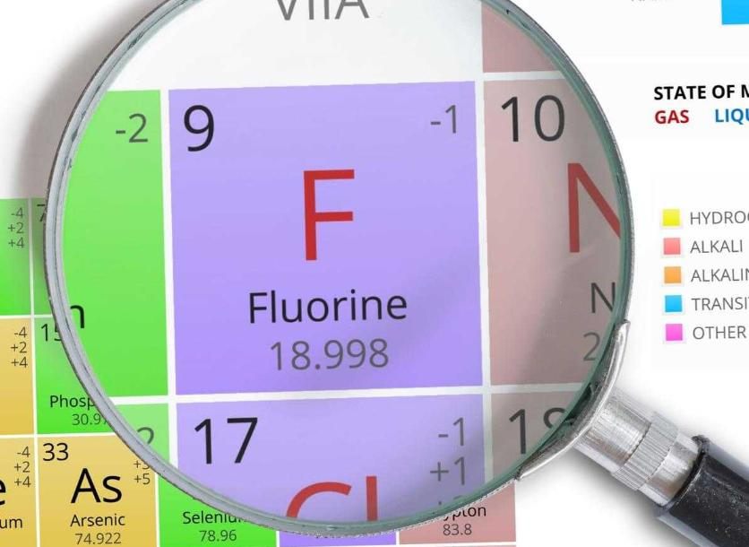
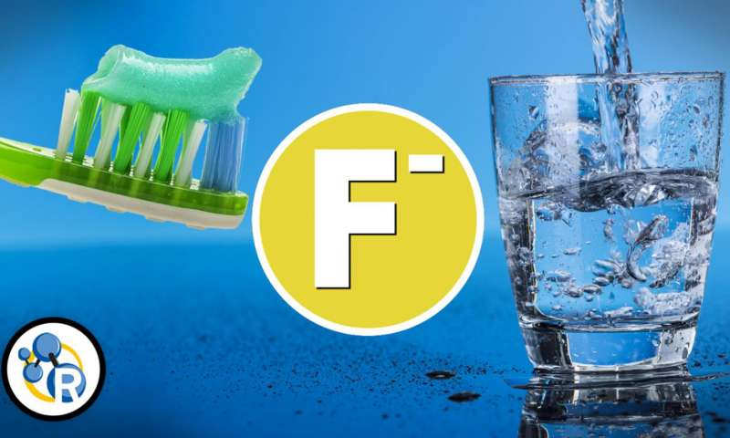
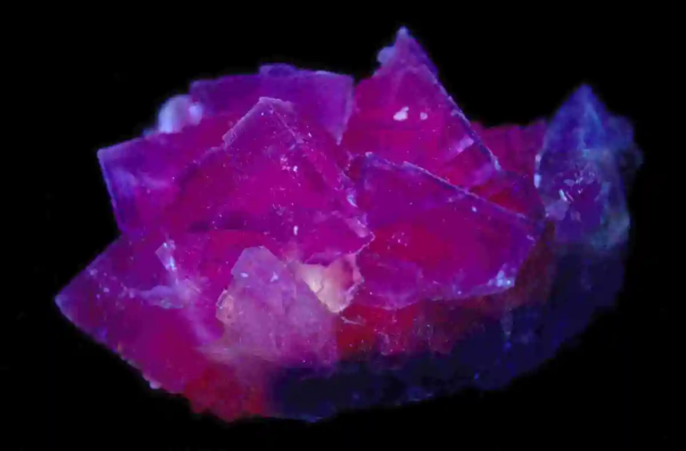

Фтор
Фтор — химический элемент ; он имеет символ F и атомный номер 9. Это самый легкий галоген и существует при стандартных условиях в виде высокотоксичного бледно-желтого двухатомного газа . Фтор чрезвычайно реакционноспособен , так как реагирует со всеми другими элементами, за исключением легких инертных газов .

Впервые соединение фтора (плавиковая кислота) получено К. Шееле в 1771 г. Название неизвестный элемент, входящий в состав плавиковой кислоты, получил в 1810 г. от названия флюорита, которое происходит от лат. fluor – течение, поток (благодаря способности минерала легко плавиться). В свободном виде элемент выделен А. Муассаном в 1886 г. при электролизе смеси KF и HF (открытие удостоено в 1906 Нобелевской премии). Русское название «фтор» происходит от греч. φϑόρος – разрушение (по свойствам плавиковой кислоты).

Значительная часть cвободного фтора идёт на получение разнообразных фторсодержащих материалов (электролитов, растворителей, лаков, ПАВ, смазочных жидкостей, инсектицидов, пестицидов, заменителей крови, фармацевтических препаратов и др.). Фтор используют в производстве гексафторида урана UF6, трифторида бора BF3, фторидов графита CFn и других элементов (WF6, NF3, SF6, CF4, SbF5, XeF6 и др.). Применяют в эксимерных лазерах на ArF* или KrF*. Фтор высокотоксичен. Раздражает кожу, слизистые оболочки носа и глаз; вызывает дерматиты, ожоги кожи, конъюнктивиты, отёк лёгких.
В ракетной технике применяются те или иные соединения фтора, обладающие значительной химической активностью и способностью к окислению различных топлив с выделением больших количеств энергии. В качестве окислителей для жидкостных реактивных двигателей.

Поскольку фтор реагирует практически со всем, существует множество его химических соединений. И многие из них оказались очень полезны. Фторхлоруглеводороды применяют в холодильных установках, гексафторалюминат натрия (криолит) применяют при электролизе алюминия, сам фторид натрия в высоких концентрациях применяют как инсектицид и так далее.